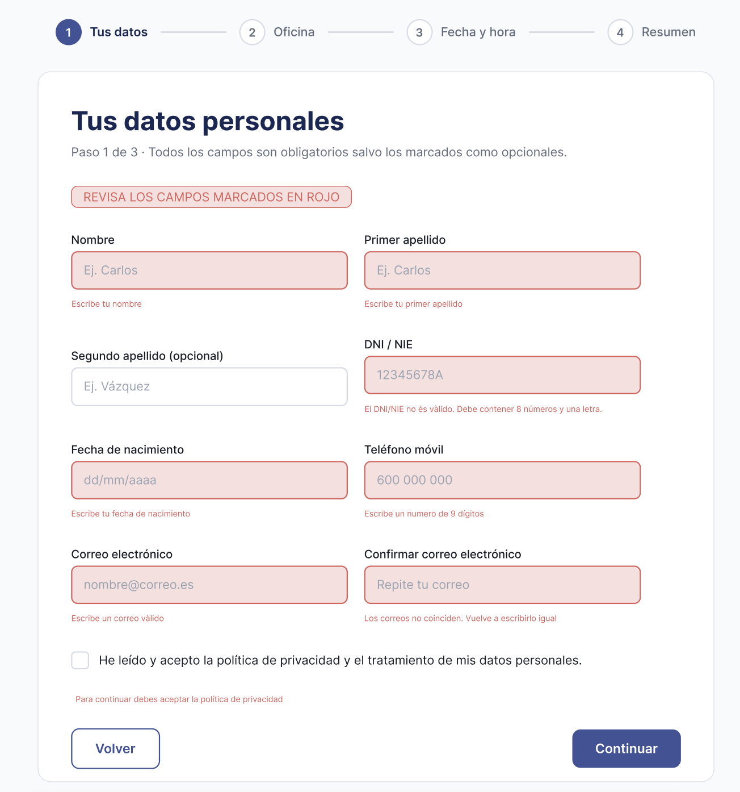

Figma: página de error
Identificación y recuperación de errores

Identificar
Señalar campos obligatorios incompletos o incorrectos.
Explicar
Mostrar mensajes específicos junto a cada campo.
Recuperar
Indicar qué dato corregir o qué casilla marcar.
El prototipo muestra un documento con formato incorrecto, correos distintos y la política de privacidad sin aceptar.
Nielsen. Ayudar a reconocer, diagnosticar y recuperarse de los errores.